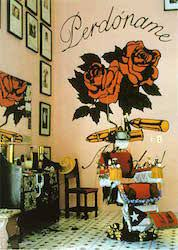

236. En la Barberia no se Llora (No crying Allowed in the Barbershop). Pepon Osorio. 1994 CE Mixed-media installation.
- Form and Content
- This is a large installation recreating the center of Latino male culture: the barbershop
- The interior of a barbershop in which “no crying is allowed”--a masculine attribute
- Photos of Latino men on the walls
- Video screens on the headrest depict men playing, a baby being circumcised, and men crying
- Appropriately tackey and grimy setting
- Context
- Pepon Osario is a Puerto Rican–born artist living in New York
- Kitsch items are used everywhere as symbols of consumer culture
- Originally a temporary work constructed in a neighborhood building, not ina museum
- This work challenges the viewer to question issues of identity, masculinity, culture, and attitudes